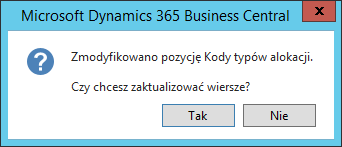

Podział kosztów na podatkowe i niepodatkowe
Informacje ogólne
Zgodnie z aktualnie obowiązującymi przepisami, podatnik może zaliczyć tylko 75% wydatków związanych z używaniem samochodu do kosztów uzyskania przychodu w przypadku, gdy wykorzystuje ten samochód również do celów niezwiązanych z prowadzoną działalnością, czyli również do celów prywatnych. W ramach Polskiej Lokalizacji w systemie Microsoft Dynamics 365 Business Central on‑premises zostało dodane narzędzie umożliwiające poprawne i przejrzyste rozliczenie takich wydatków.
Ustawienia
W celu ustawienia zasad alokacji kosztów, należy wykonać następujące kroki:
Należy wybrać Działy > Zarządzanie Finansami > Administracja > Zobowiązania > Ustawienia > Typy alokacji.
W oknie Typy alokacji, które się otworzy, należy na wstążce kliknąć Nowy.
W oknie Kartoteka typu alokacji należy wypełnić pola zgodnie z poniższym opisem:
Karta skrócona Ogólne:
Kod – w tym polu należy wprowadzić unikalny kod identyfikujący dany schemat alokacji kosztów,
Opis – w tym polu można wprowadzić opis danego schematu alokacji kosztów,
Zachowaj pierwotny wiersz – zaznaczenie tego pola spowoduje, że źródłowy wiersz dokumentu z kosztem podlegającym alokowaniu nie zostanie usunięty po wykonaniu alokacji. Brak znacznika spowoduje, że wiersz źródłowy zostanie usunięty z dokumentu.
Karta skrócona Wiersze:
Typ – domyślnie ustawiona jest opcja Konto K/G, bez możliwości zmiany – wskazuje na bezpośrednią ewidencję kosztu na kontach księgi głównej (ewidencja wartościowa),
Nr – z listy rozwijanej w tym polu należy wybrać właściwe dla ewidencji kosztów konto księgi głównej,
Typ alokacji – z listy rozwijanej w tym polu należy wybrać wartość w dokumencie zakupu, która będzie dzielona w wyniku alokowania kosztu:
Ilość – nowe wiersze dokumentu zakupu zostaną utworzone w wyniku podzielenia wartości z pola Ilość w pierwotnym wierszu zakupu,
Koszt jednostkowy – nowe wiersze dokumentu zakupu zostaną utworzone w wyniku podzielenia wartości z pola Bezpośr. koszt jedn. w pierwotnym wierszu zakupu.
Opis – pole opcjonalne – w tym polu można wprowadzić krótki opis wiersza (np. zdefiniowanych w nim zasad alokacji),
Udział – w tym polu należy wprowadzić wartość klucza podziału kosztów według udziału ilościowego – na tej podstawie zostanie wyliczona wartość procentowa w polu Procent,
Procent – pole nieedytowalne, prezentujące wartość klucza podziału kosztów według udziału procentowego, wyliczonego na podstawie wartości wprowadzonych w polu Udział.
Do każdego wiersza alokacji można przypisać zestaw wartości wymiarów, który będzie miał zastosowanie w utworzonych wierszach dokumentu zakupu. Aby przypisać wartości wymiarów, w karcie skróconej Wiersze można wyświetlić kolumny z odpowiednimi wymiarami, lub zaznaczyć wiersz i kliknąć akcję Wiersze, następnie kliknąć Wymiary (można też nacisnąć Ctrl+Shift+D). Czynność należy powtórzyć dla każdego wiersza w oknie Kartoteka typu alokacji.

Obsługa
Alokowanie kosztów w głównej mierze dotyczy wydatków, które należy podzielić na podatkowe i niepodatkowe, dlatego funkcjonalność jest dostępna w dokumentach zakupu typu faktura i zamówienie.
Uwaga
Opis funkcji alokowania kosztów zamieszczony w dalszej części rozdziału bazuje na przykładzie faktury zakupu. W zamówieniu zakupu mechanizm jest identyczny, więc należy wzorować się na opisie dotyczącym faktury zakupu.
W celu zaksięgowania kosztów z faktury zakupu według wybranego klucza alokacji, należy wykonać następujące kroki:
Należy wybrać Działy > Zarządzanie Finansami > Zobowiązania > Faktury zakupu.
W oknie Faktury zakupu, które się otworzy, należy na wstążce kliknąć Nowy.
Należy wypełnić nagłówek i wiersze nowej faktury zakupu w standardowy sposób.
W wybranych wierszach faktury z kosztami do alokowania należy z listy rozwijanej w polu Typ alokacji wybrać wcześniej zdefiniowany klucz, według którego ma zostać dokonany podział kosztu z danego wiersza.

Jeśli wszystkie koszty, we wszystkich wierszach faktury, mają zostać podzielone według tego samego klucza, można w nagłówku dokumentu, w karcie skróconej Ogólne, z listy rozwijanej w polu Typ alokacji wybrać klucz, który zostanie skopiowany do wszystkich wierszy.
Zmiana wartości w polu Typ alokacji w karcie skróconej Ogólne w sytuacji, gdy istnieje choć jeden wiersz dokumentu, spowoduje wyświetlenie komunikatu, w którym należy kliknąć Tak, aby zastosować zmianę do wszystkich wierszy dokumentu.


- Po przypisaniu typu alokacji do wszystkich wymaganych wierszy, należy na wstążce kliknąć Zaalokuj wszystkie wiersze.

W wyniku działania tej funkcji, system utworzył nowe wiersze faktury zakupu na podstawie wybranego typu alokacji, włącznie z wymiarami. Wiersz źródłowy, który podlegał alokowaniu, został zachowany lub usunięty, w zależności od parametru Zachowaj pierwotny wiersz ustawionego dla wybranego typu alokacji.

Dalsze procesy weryfikacji i księgowania faktury zakupu należy wykonać w standardowy sposób.